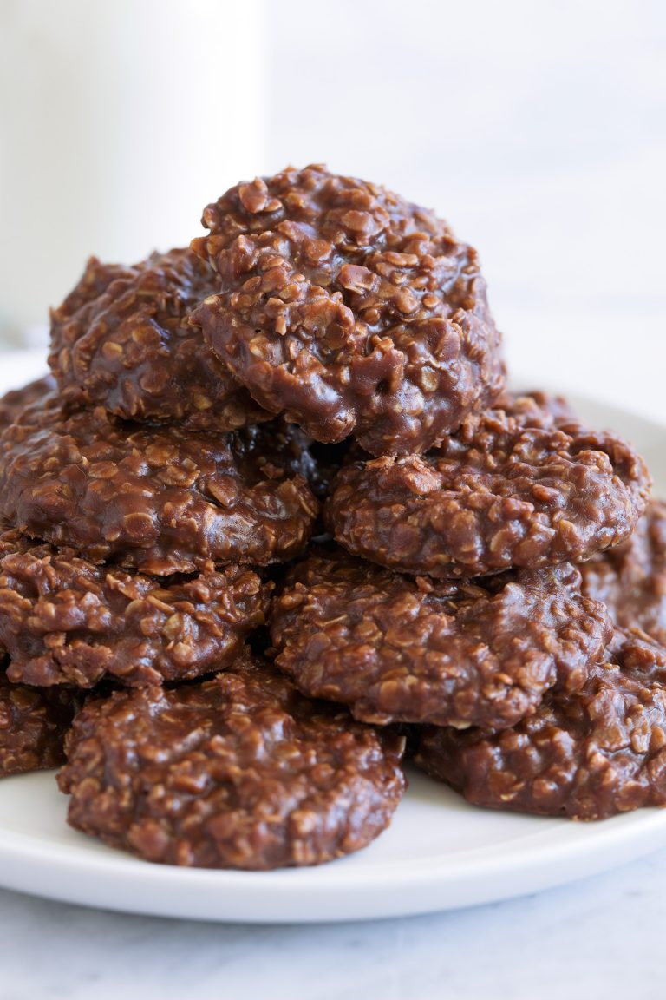

Home index page
No Bake Cookies

Desription
Just like Grandma used to make. This recipe has been around for generations. So simple yet so delicious. Easy to make, these are sure to become a favorite in your family too.
Ingredients
- 1/2 c butter
- 1 3/4 c sugar
- 1/3 c unsweetened cocoa powder
- 1/2 c milk
- 1 tsp vanilla
- 2/3 c creamy peanut butter, if using crunchy add an addtl. 1.4 c.
- 3 c quick oats. NOT "old fashioned".
Steps
- Line 2 baking sheets with parchment paper or set out 30 cupcake liners.
- In a medium saucepan combine butter, sugar, cocoa and milk.
- Heat on medium heat, stirring frequently until mixture reaches a full boil.
- Once mixture reaches full rolling boil, boil for 60 seconds without stirring.
- Remove from heat and immediately add vanilla, peanut butter and quick oats.
- Stir mixture well. Drop spoonfuls of mixture onto prepared sheet/liners. Approx 2 T per cookie.
- Cool cookies. Approx. 20-30 mins at room temp. or refrigerate for faster setting.
- Enjoy! Store in airtight container at room tempurature.